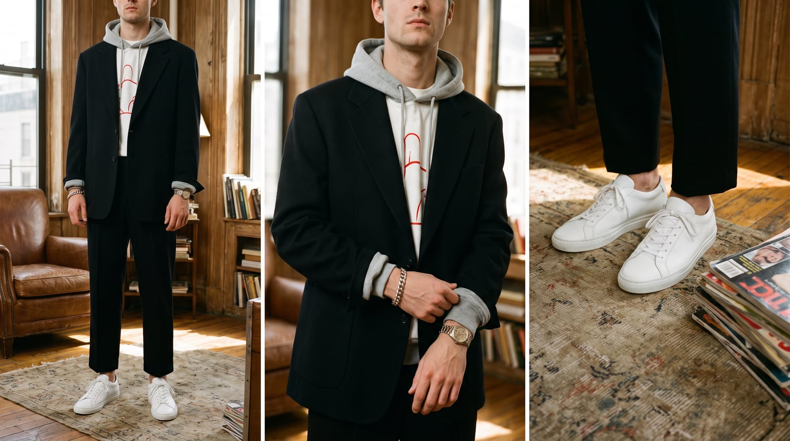
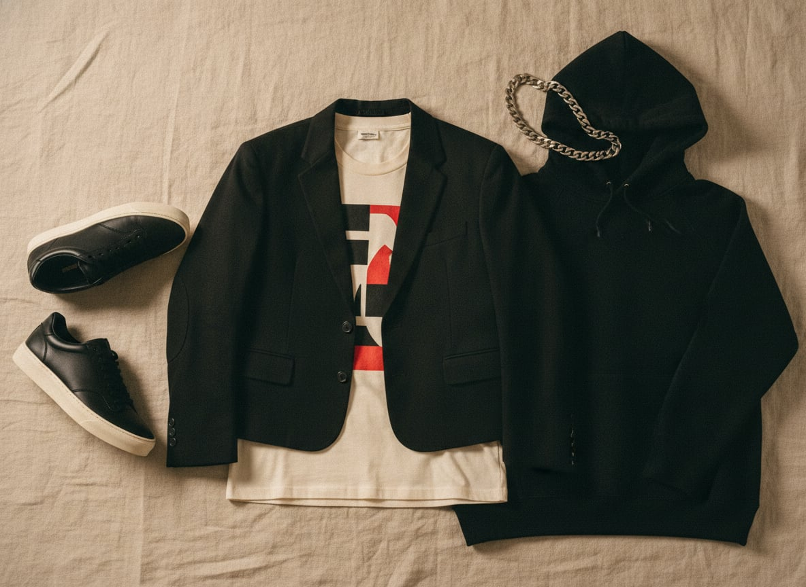
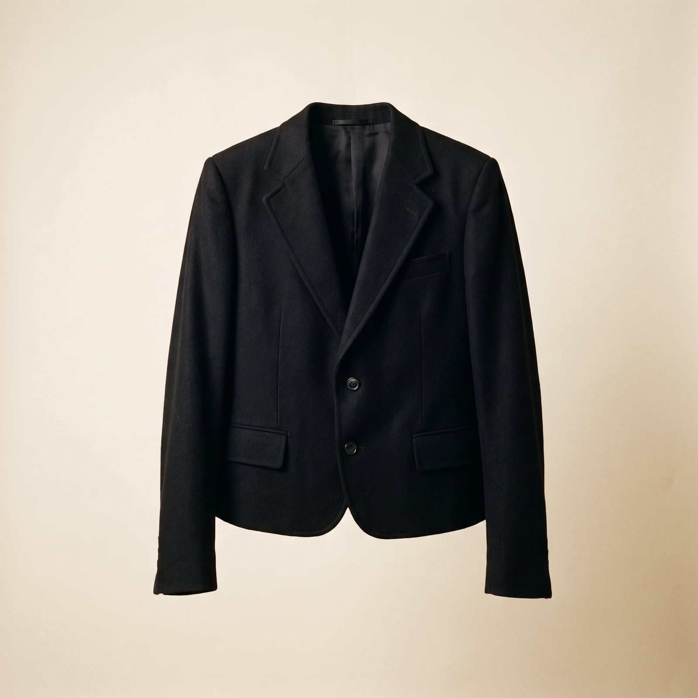
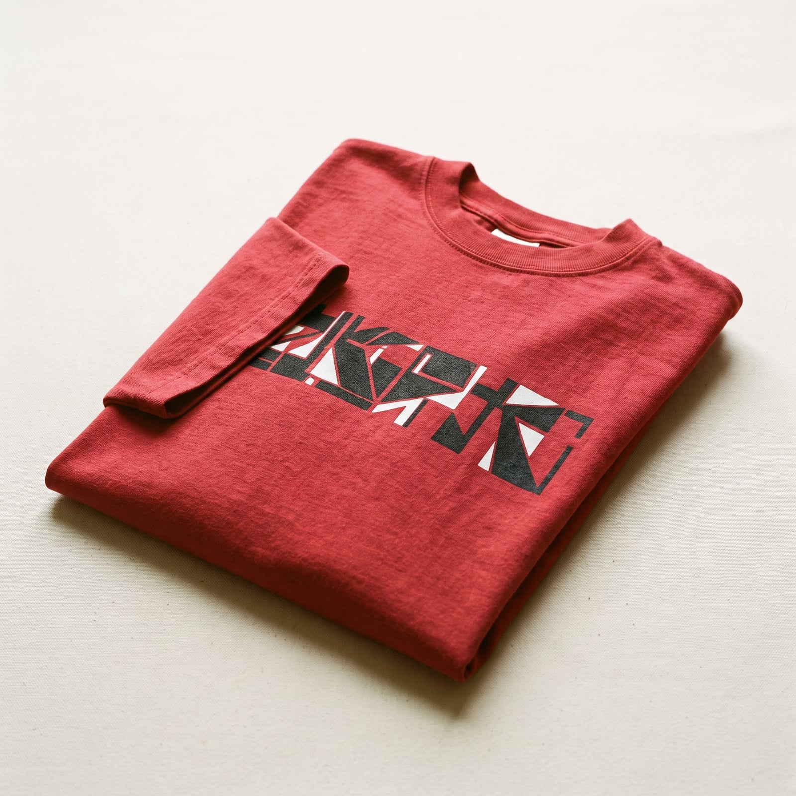
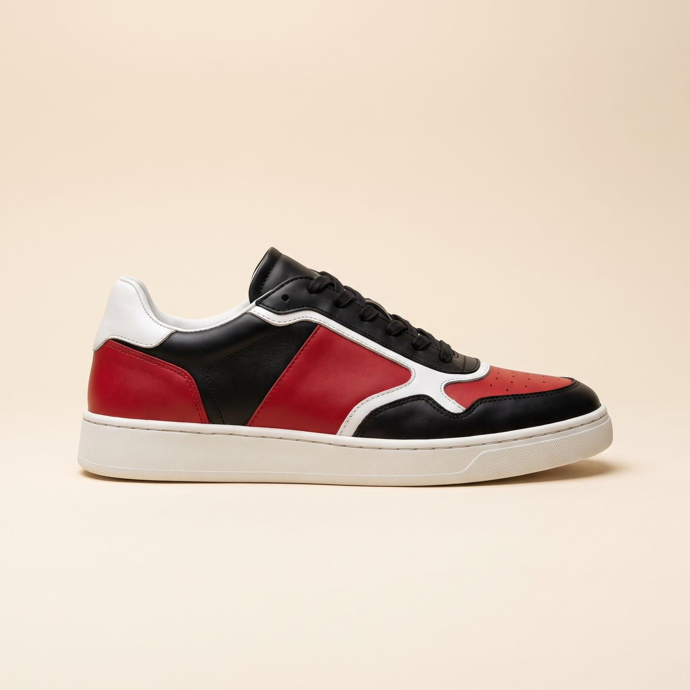
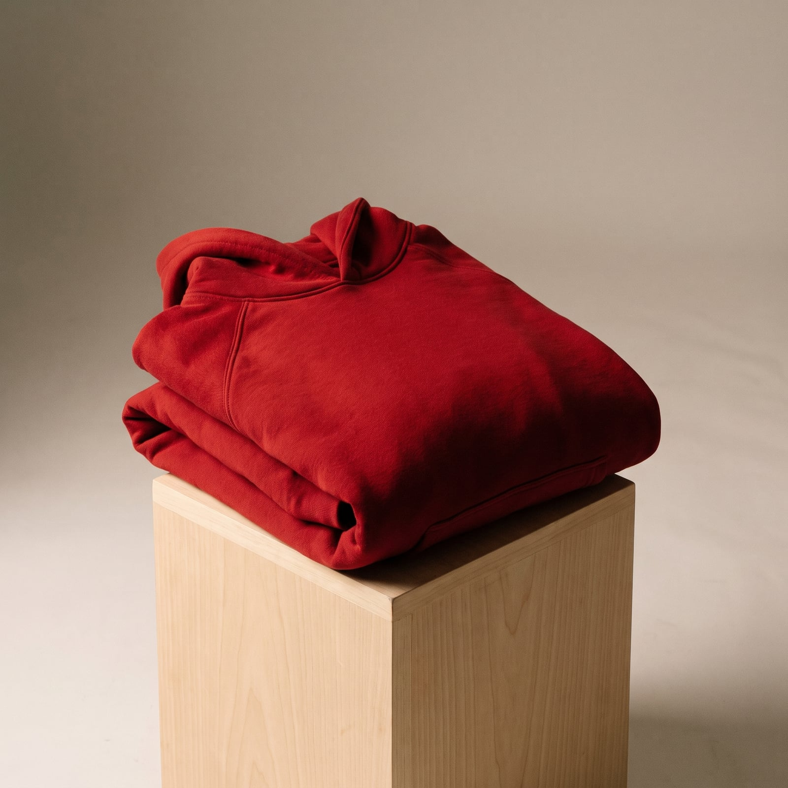
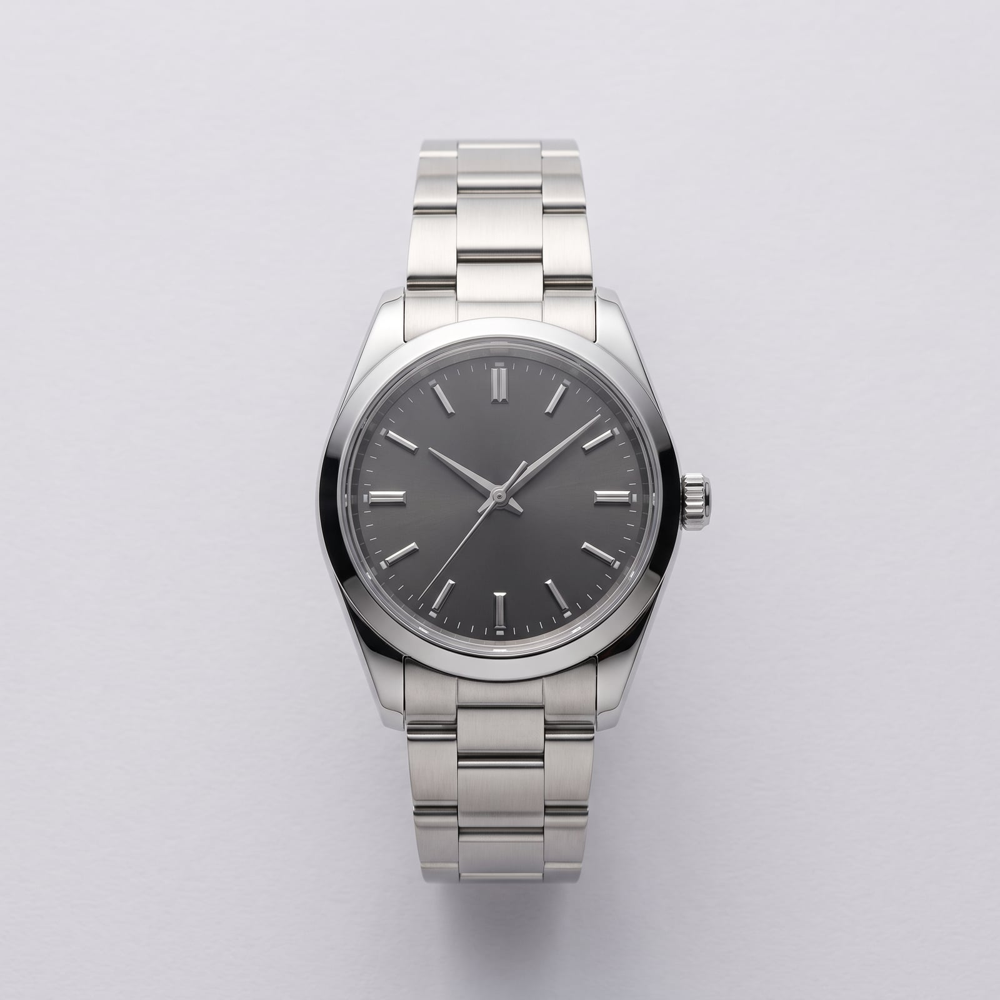

The Remix
Streetwear started as a subculture's uniform — surf and skate labels like Stüssy in the 1980s, hip-hop's DIY logo culture, Supreme's line-around-the-block drops in the 1990s — built entirely outside the fashion establishment it would eventually absorb. The merger became official in the 2010s, when designers like Virgil Abloh (moving between Off-White and the head of menswear at Louis Vuitton) and Chitose Abe at Sacai started treating a Savile Row jacket and a graphic hoodie as materials of equal seriousness, splicing them into single garments rather than choosing between them.
The trademark is deliberate collision: a tailored blazer over a plain white tee, sneakers with a suit, a sportswear fabric cut into a formal silhouette, an heirloom watch on a wrist otherwise dressed for a skate park. None of it reads as compromise; it reads as fluency — the wardrobe equivalent of someone equally comfortable in two languages, switching between them mid-sentence because it says something neither language alone could.
It suits people who move between worlds and see no reason their clothes shouldn't too — who find the old formality-versus-comfort argument a little beside the point. There's a real cultural literacy required to do it well: you have to actually understand both traditions to remix them convincingly, rather than just wearing pieces of each and hoping they cancel out into something coherent.
- Tailoring deliberately paired with sneakers or technical footwear
- Graphic or logo pieces worn alongside genuinely classic garments
- Sportswear fabrics — fleece, nylon, mesh — cut into tailored silhouettes
- Proportion play: oversized on top, cropped below, or the reverse
- Layering that mixes registers on purpose — a suit jacket over a hoodie, a chain over a crewneck

The Tailored Blazer
Designers like Virgil Abloh at Off-White and Louis Vuitton spent the 2010s insisting a tailored blazer and a hoodie were materials of equal seriousness — this jacket is the wardrobe's proof that tailoring didn't need to be abandoned, just recontextualized.
The proportion and silhouette at an accessible price.
Shop this →Genuine tailoring construction in a more fashion-forward cut.
Shop this →The two names most associated with tailoring-streetwear hybridization.
Shop this →
The Graphic Tee
From Supreme's line-around-the-block drops in the 1990s to today, a well-chosen graphic tee functions in this wardrobe the way a signet ring does in a more traditional one — a small, legible signal of specific cultural fluency.
Genuine heavyweight cotton and real licensed graphics at a low price.
Shop this →Scarcity-driven pricing on pieces that function partly as cultural signifiers.
Shop this →
The Sneaker
Basketball and skate sneaker culture spent the 1980s through 2000s building a genuine expertise hierarchy around silhouette, colorway, and release history — knowledge this wardrobe treats with the same seriousness as shoe-tree care in a more formal one.
Genuine design pedigree at a broadly accessible price.
Shop this →Scarcity-priced pieces that function as much as objects as footwear.
Shop this →
The Layered Hoodie
A plain, heavyweight hoodie worn under a blazer rather than instead of one is this wardrobe's clearest single gesture — comfort and tailoring occupying the same outfit without either one losing.
Genuine heavyweight fleece at an accessible price.
Shop this →Premium fleece and a cut designed specifically to layer under structured pieces.
Shop this →
The Statement Chain or Watch
A single, deliberately visible piece of jewelry — a chain, a heavy watch — gives this wardrobe the same finishing signal a pocket square gives a more traditional one, borrowed directly from hip-hop's long relationship with visible wealth.
Real sterling silver or gold-plated construction at an accessible price.
Shop this →A genuine step into fine jewelry or watchmaking.
Shop this →The pieces this entire aesthetic ultimately gestures toward.
Shop this →Pick one half of each pairing to be genuinely sharp and let the other stay genuinely casual — a well-cut blazer over a plain hoodie works because the blazer is real tailoring, not because both pieces are trying equally hard. The tension between the two registers is the whole point; softening either side into a compromise collapses the joke.
Spend real money on the sneaker and the chain — in a wardrobe built on deliberate contrast, the casual half has to be visibly good, not just casual, or the whole outfit reads as simply underdressed rather than intentionally remixed.
Don't let the mix become a muddle — pairing a tailored blazer with sneakers works because each piece stays legible on its own; swap in a slightly-too-casual jacket and a slightly-too-formal shoe and the eye can't find the joke anymore, since neither half is doing its job clearly. The contrast needs both ends to be confident, not diluted toward the middle.
This is a going-out and content-forward wardrobe more than an everyday-errand one — worn to a genuinely formal event, the sneakers read as underdressed rather than knowing; worn to actual manual work, the tailoring reads as impractical rather than interesting. It performs best in exactly the settings built to notice the contrast.
The blazer gets shorter and lighter, worn over a tank or plain tee instead of a button-down, with the sneakers swapped for a slide or a low-top in a lighter material.
The hoodie layer gets heavier, a puffer goes over or under the blazer, and the sneaker gets a higher, warmer silhouette without losing the mixed-register logic.
A technical shell worn over tailoring, exactly the kind of collision this wardrobe already loves, with a water-resistant sneaker rather than anything that pretends to be a boot.
The puffer becomes the main event, oversized and worn over the blazer rather than instead of it, with a genuinely winter-rated sneaker-boot hybrid.
The sneakers get swapped for a genuinely sharp leather shoe (the one traditional concession), but the graphic tee and the mixed proportions stay -- dressing up here means editing, not converting.

Tokyo, Seoul, and wherever the next sneaker collaboration is dropping — travel planned around culture and release calendars in roughly equal measure.
A trip is considered incomplete without at least one purchase that has to be carried home carefully, in its original box, in a separate bag.
Streetwear and culture archives read the way older generations read the sports page, plus biographies of genre-crossing designers who moved between sport, art, and fashion without apologizing for any of it.
Graphic novels taken as seriously as literary fiction, with a specific, strong opinion about which ones actually hold up.
Find it on Amazon →Genre-agnostic by design — hip-hop, hyperpop, and whatever's algorithmically adjacent — played loud, switched constantly, never on one station long enough to get bored.
A playlist that updates weekly and gets shared as a kind of social currency, more mixtape than personal archive.
Listen on YouTube →A sneaker wall treated with more curatorial care than the art on the other walls, lit properly, rotated seasonally.
A mix of genuine vintage furniture and something clearly 3D-printed or otherwise brand-new, in a setup built for content as much as comfort.
See more on Pinterest →Sneaker collecting as a genuine hobby rather than a purchase habit, tracked with spreadsheets and strong opinions about resale ethics.
Basketball, played more for the culture around it than competitive ambition, and a running group chat dedicated entirely to what just dropped.
Learn more →